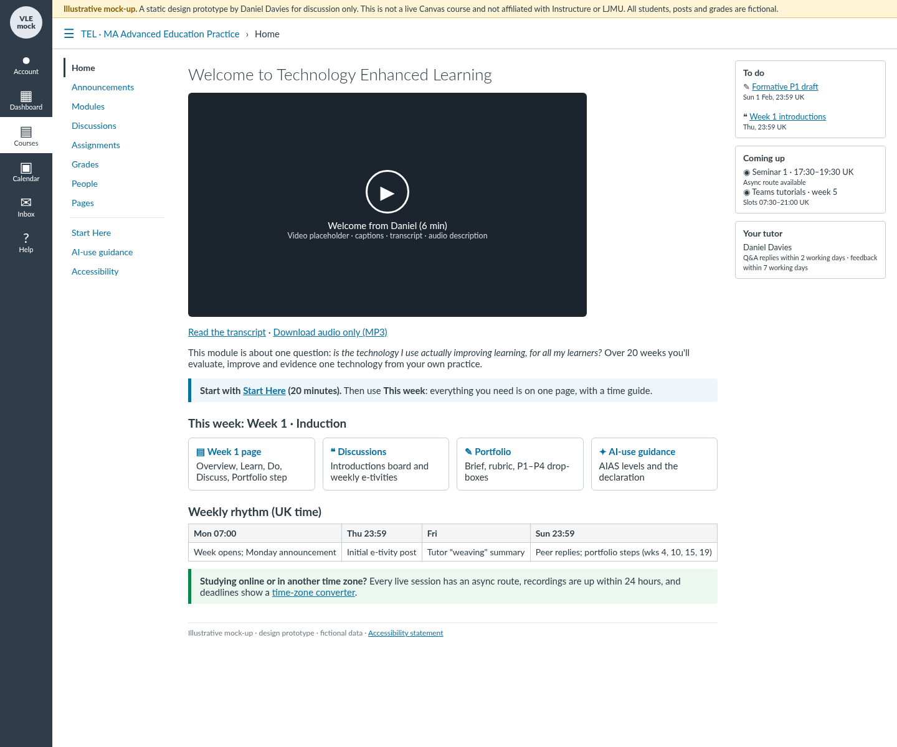
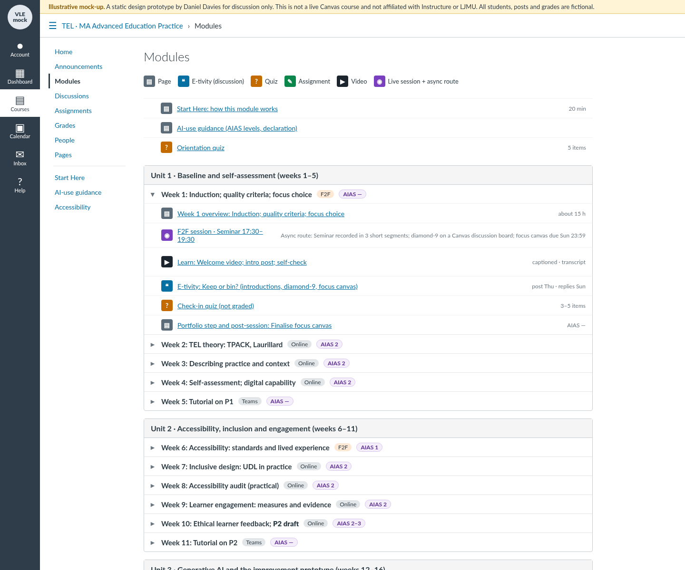
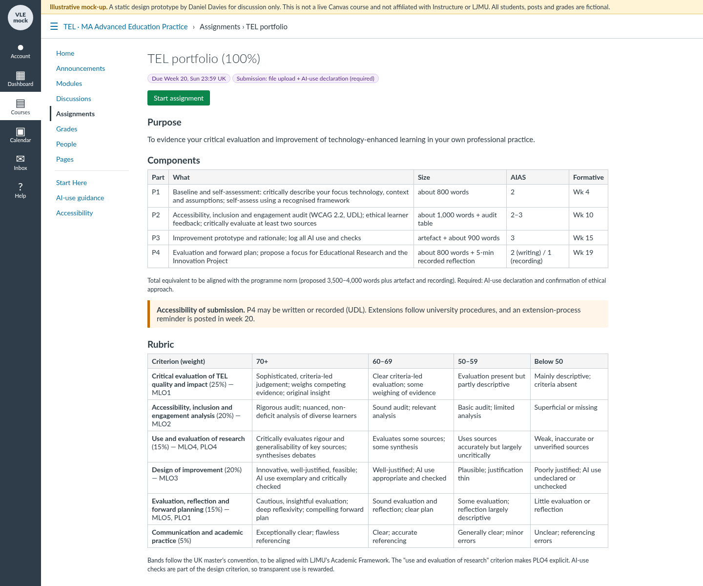

Leadership and impact
How I have led modules, a teaching team and assessment, and what I contribute beyond my own classes.
Module leadership
At Study Group (LJMU International Study Centre) I was Module Leader for three modules across Levels 3 and 4, and the Centre Director confirmed me in that role for 2025/26: International Business and Environment (Level 3), Business Decisions, Strategy and Global Business (Level 4) and Marketing and Business Management (Level 4).
On Business Decisions, Strategy and Global Business I led a teaching team of three colleagues (two sessional, one full-time) who co-taught the module with me, holding informal responsibility for the team. I coordinated delivery across our groups, the assessment, and the standardisation of marking, so that students had the same experience and the same standard whichever tutor they had.
I also peer-mentored a colleague teaching Business Decisions, writing weekly tutor guidance to go with the materials.
Assessment design and results
- ~70summative assessments written, with full mark schemes, across three intakes
- 60–69%verified class means in several cohorts on my redesigned assessments (highest 69%)
- 69%highest verified class mean, a Marketing class
- 100%pass rate in three cohorts of 21–27 students
I wrote the assessment briefs, case studies, examinations, referral examinations and mark schemes for my modules: about 70 summative assessments across three intakes, in an exam pack of about 30 documents per intake. I designed the Future Focus Employability assessment for the Marketing module, a 20% summative online task that combines an auto-marked quiz with a reflective action plan, and built its question bank and VLE template.
Verified class means on my redesigned assessments reached 60–69% in several cohorts (highest 69%). A 69-student Marketing and Business Management module averaged 66% with only two referrals (2026).
As internal examiner for Level 4 exams and case studies I marked about 110 scripts per cycle, and internal moderation confirmed my marking in 2026. Peer moderation of my referral marking changed no marks, and a peer moderator described my marking as “excellent, thorough, and accurate”.
Curriculum design at Level 7
In October 2026 I prepared an illustrative design for a 30-credit Level 7 option in Technology Enhanced Learning, for in-service educators on a master’s programme in education practice, and built a static Canvas mock-up to show how it would run. It is a design for discussion, not a live course, and every name, post and grade in the mock-up is fictional.
The design runs over 20 weeks in four units: baseline and self-assessment; accessibility, inclusion and engagement; generative AI and an improvement prototype; and evaluation and forward planning. It is async-first, so every live session has an asynchronous route. Assessment is a portfolio built in four parts, each with a formative point before final submission, so participants receive feedback while they can still use it (Biggs, 1996). Each task carries an AI-use level based on the AI Assessment Scale (Perkins et al., 2024), with a declaration, and the module has its own accessibility statement.



Innovation
Through my PhD I have designed and built a prototype module feedback agent that answers only from a lecturer’s own materials and will not write assessed work. The innovation showcase sets out what it does, the design principles behind it and its guardrails.
Citizenship and collegiality
- Teaching and Learning Champion, 2025/26. I carried out at least four peer observations of colleagues’ teaching between November 2025 and January 2026, across business and English for academic purposes classes. Each one had a pre-observation meeting and written developmental feedback afterwards.
- Peer observation. I took part in the centre’s peer-observation cycle from my first term, observing colleagues in 2024 and working with a peer-observation partner in 2025/26.
- Committees and curriculum. I was an invited member of the centre's Quality and Board of Study committees and contributed to curriculum enhancement. I wrote a module-development report for the Curriculum Committee (May 2025) and a curriculum harmonisation proposal for the business route (December 2025).
- Moderation. Alongside my own internal examining, I moderated colleagues’ marking in 2026.
- Supporting colleagues. I peer-mentored a colleague teaching Business Decisions and wrote weekly tutor guidance.
No colleague or student is named here, and no observation form or student work is reproduced.
References
Biggs, J. (1996) ‘Enhancing teaching through constructive alignment’, Higher Education, 32(3), pp. 347–364. doi:10.1007/BF00138871
Perkins, M., Furze, L., Roe, J. and MacVaugh, J. (2024) ‘The Artificial Intelligence Assessment Scale (AIAS): a framework for ethical integration of generative AI in educational assessment’, Journal of University Teaching and Learning Practice, 21(6). doi:10.53761/q3azde36